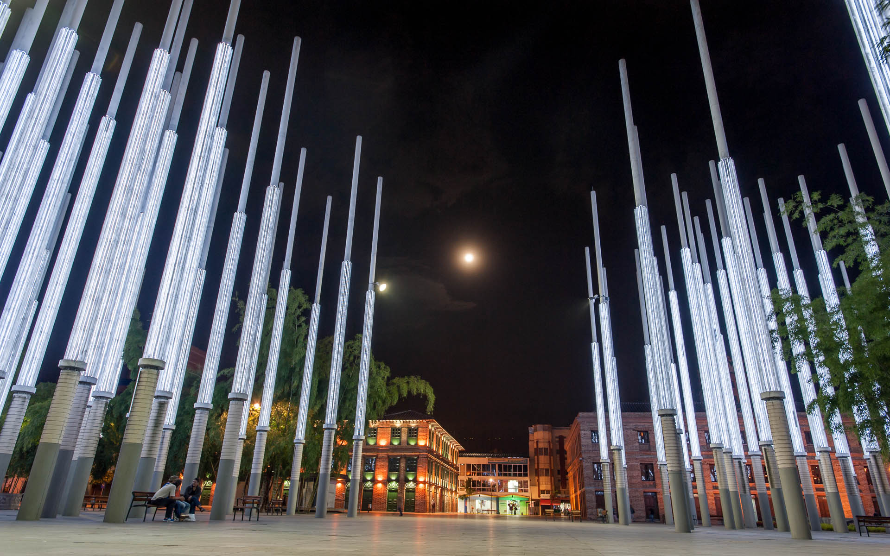

Cada sitio tiene su historia


Medellin: La Eterna Primavera
La ciudad de Medellín es uno de los lugares más hermosos que he visto, su alias no le queda grande, esta ciudad cuenta con lugares tan hermosos que incluso querrás vivir allí, y no solo por los lugares más visitados si no por su clima casi perfecto para los que no les gusta estar con mucho frio ni con mucho calor.
Guatapé
Suba los 742 escalones hasta la cima de la Piedra del Peñol y visite el centro histórico y el encantador pueblo de Guatapé con una de las empresas de visitas turísticas más antiguas y fiables de Medellín. Esta es la única empresa con servicio en Guatapé que aparece en TripAdvisor y ha recibido el certificado de excelencia de TripAdvisor en 2016. Durante todo el día le acompañarán guías profesionales para recorrido de 10 a 12 horas. Esta es la excursión que no querrá perderse durante su visita a Medellín (Colombia).

Si eres de los que les gusta ayudar al medio ambiente te sentirás en un paraíso ya que la gente del lugar cuida mucho de ciudad, ha ganado este año el premio al mejor sitio para visitar en Suramérica por todos los comentarios positivos que recibió de usuarios de 'TripAdvisor'; El Metrocable, el Museo de Antioquia y el Parque Explora fueron algunos de los lugares mejores calificados por los usuarios de la plataforma
Este parque está ubicado en Medellín en la antigua plaza de Cisneros, la que es hoy el Parque de la Luz, al que 300 enormes postes luminosos, 2.100 reflectores y 170 lámparas de piso lo convierten en un moderno espacio público. Espacio en el cual se desarrollan distintas actividades como lo son las ventas ya sea las que se hacen cada mes que constan de toldos en los cuales venden comida, accesorios y distintos medios de entretenimiento, o las ambulantes que podemos encontrar todos los días.